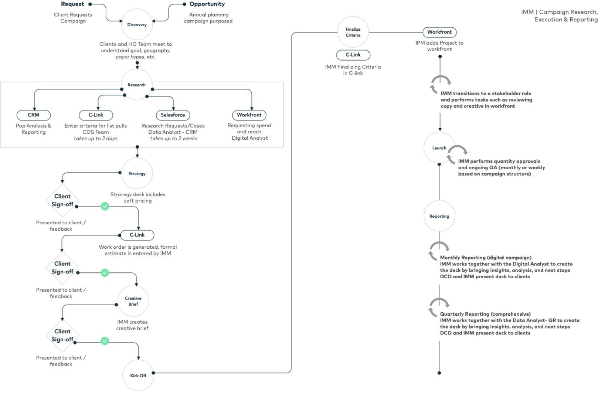
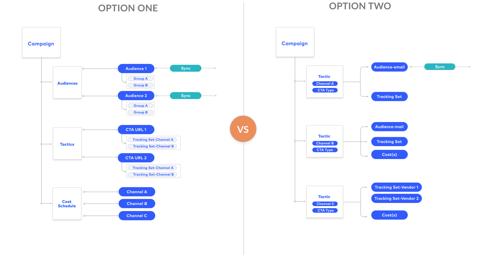
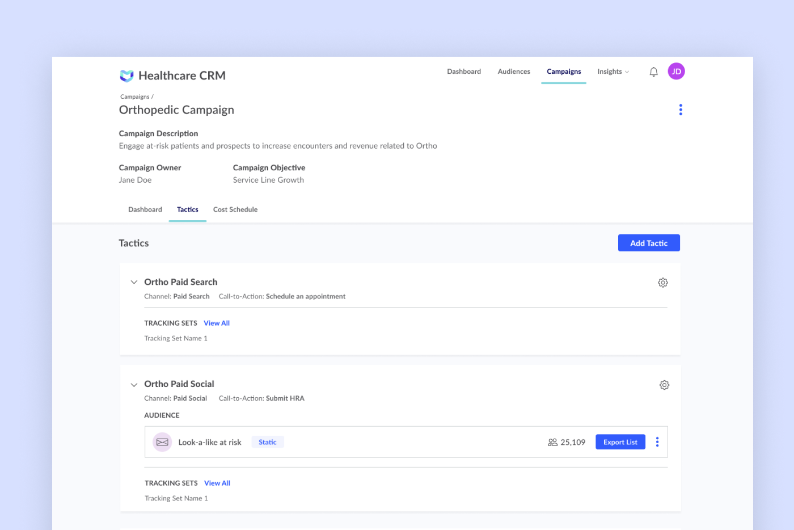

RESEARCH
Hospital Marketers
We interviewed around 15 hospital marketers and focused on discovering the elements used within a campaign, how those elements relate to each other and how marketers expected those elements to be reported on.
From those interviews we were able to understand the marketers process outlined below

TESTING
Campaign Structure
After defining a typical marketer process, two campaign structure concepts were developed. Option One kept all the elements the marketer needs under the parent of the campaign, where Option Two associated the elements under a specific tactic. The concepts were tested with 5 users and 3 potential clients.
Option One
Option Two

Most participants preferred Option Two. When asked how well the process matched how they execute their campaigns the average score 4.125 out of 5.
SOLUTION
Interface Development
After completing an audit of the existing page and the campaign structure defined, I was able to brainstorm a few concepts.
To accommodate the new structure, the tactics page was added to the sub navigation to easily access what users said was most important. The page was designed to match how the campaigns are structured and display all the tactics and the associated audiences and tracking.
Each card was designed specifically for each tactic channel removing the unnecessary clutter on the existing cards and guiding the user to what is most important for each tactic. From feedback, the collapse functionality was added so users could easily scan and decipher the tactics.
The interface was tested with 5 users and when asked how well the design supported how they built their marketing campaigns the average score was 4.5.
